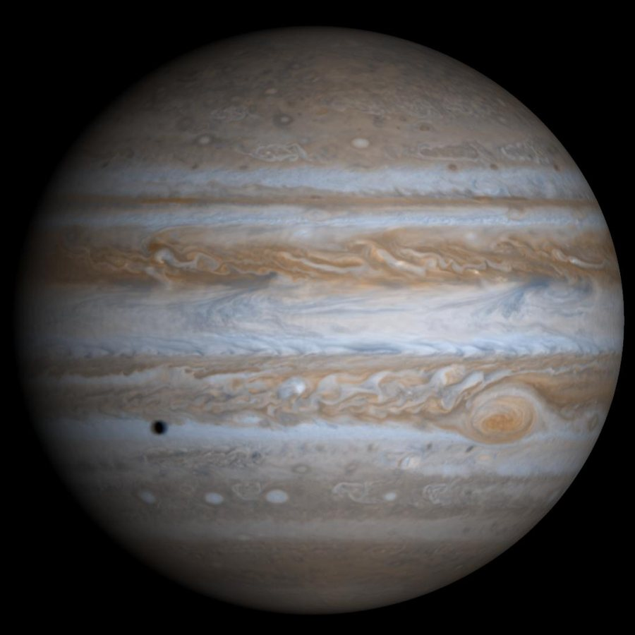

Júpiter é o quinto planeta a partir do Sol e o maior de todos. É um gigante gasoso, formado principalmente por hidrogênio e hélio, sem uma superfície sólida. Sua massa é mais que o dobro da soma de todos os outros planetas juntos, e suas faixas coloridas são nuvens arrastadas por ventos fortíssimos.
Cerca de -110 °C nas camadas altas da atmosfera
139.820 km de diâmetro (11 vezes o da Terra)
Entre 588 milhões e 968 milhões de km